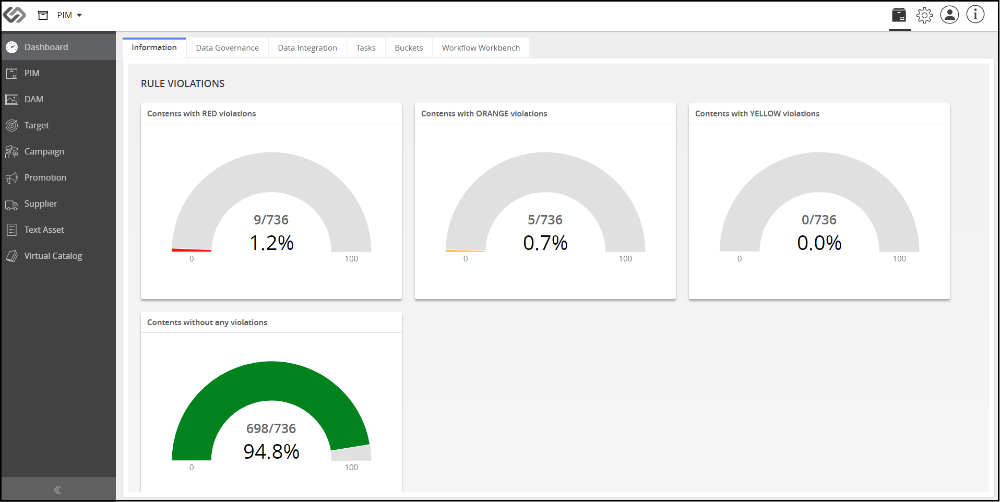

Getting Started: Users¶
1. Overview | 2. Users | 3. Products | 4. References |
Introduction¶
A user is someone who logs into the Contentserv system. Depending on the permission given, a user can:
- create products and taxonomies
- view and update
- delete
Log in to Contentserv¶
1. On a web browser, enter https://sandbox.contentsphere.com/docs.
2. Enter the username and password.
3. Click LOG IN.
Dashboard¶
The Dashboard provides an at-a-glance view of the Contentserv system, providing access to the array of features that Contentserv offers. From PIM to DAM to Virtual Catalog, the Dashboard lets you navigate the system with ease while making the quality monitoring process a breeze.
Add New Users¶
1. Go to Administration > Partner Admin > Users.
2. Enter data in the fields then click Create.
3. Click Add Icon and select an image icon from your computer.